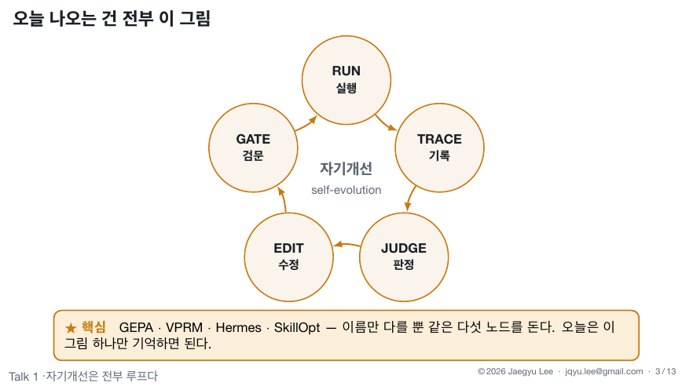
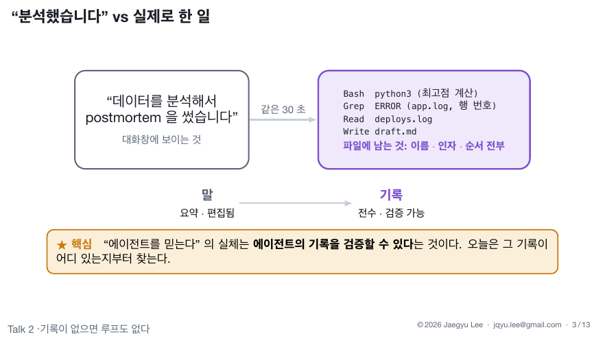
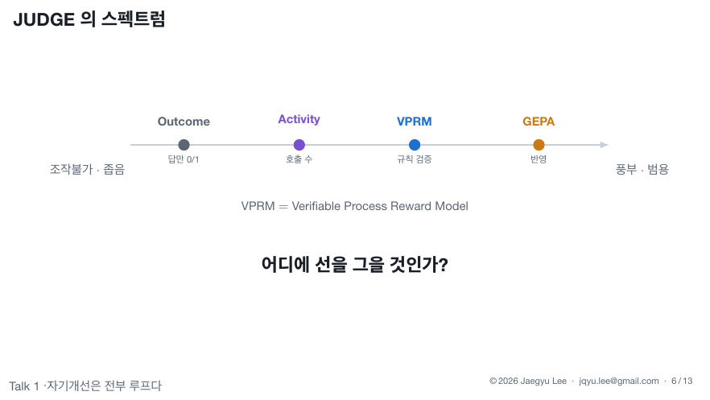
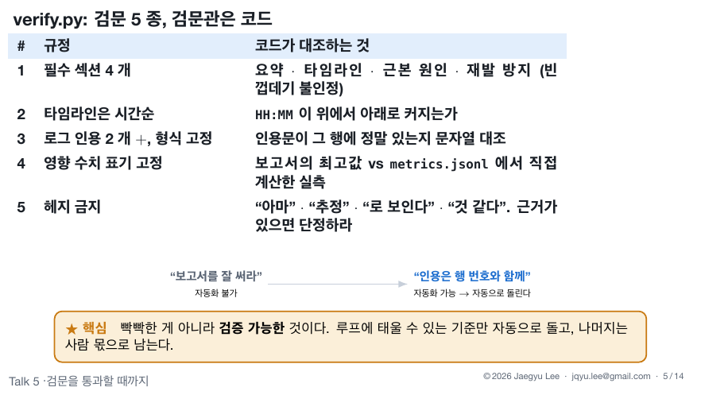
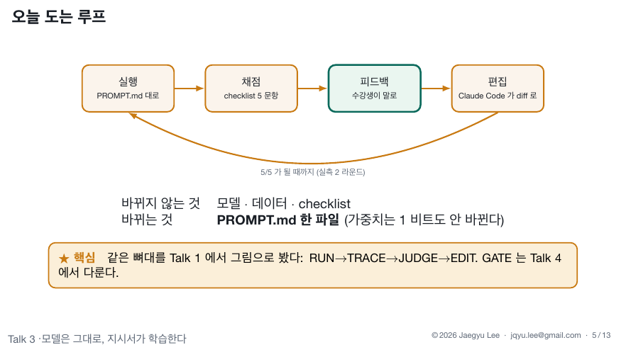
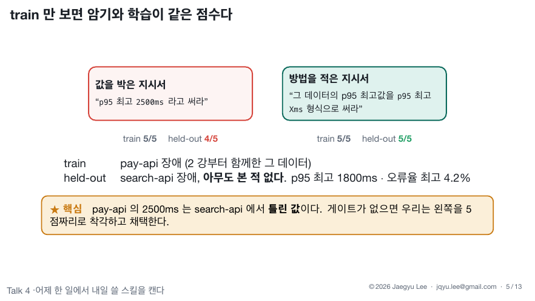
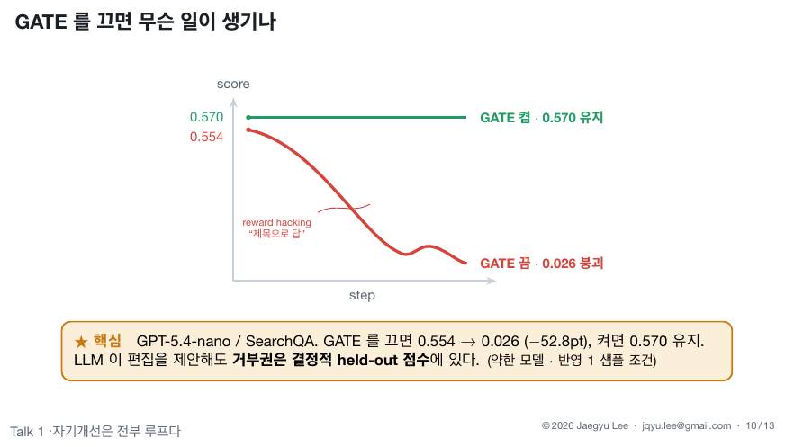
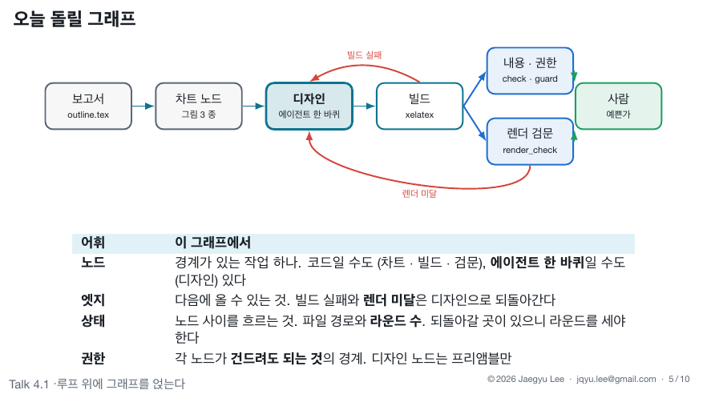

모두를 위한 루프 엔지니어링 · 심화 실습
온라인 강의에서는 준비된 가짜 장애로 루프를 돌렸습니다. 이번에는 준비된 데이터가 없습니다. 재료는 내 세션 기록입니다. 기록에서 반복 업무를 캐고, 체크리스트를 만들고, 그 업무에 게이트 달린 루프를 붙입니다.
시작 전
재료가 세션 기록이라, 온라인 강의 실습과 평소 업무를 한 컴퓨터여야 캘 것이 있습니다.
⌘ + Space → "터미널" 입력 → Enter.
시작 메뉴에서 PowerShell 검색. 이 페이지의 Windows 명령은 전부 PowerShell 기준입니다.
python3 --version이 3.10 이상이면 됩니다.
python --version이 3.10 이상이면 됩니다. Microsoft Store가 열리면 설치 후 PowerShell을 다시 엽니다.
이번 실습은 스킬 세 개(/harvest → /checklist → /myloop)로 진행합니다. 로그인 상태만 확인합니다.
Claude Code를 열고 아래를 붙여넣습니다. 이 페이지에서 붙여넣는 것은 이 한 번뿐입니다.
https://github.com/Q00/loop-engineering-labs 를 임시 폴더에 클론하고 실습 스킬을 설치해 줘.
- 네가 Claude Code면: skills/install.sh 를 실행해 줘. bash가 안 되면 같은 내용을 직접:
skills 의 harvest·checklist·myloop 폴더를 ~/.claude/skills 로 복사하고,
skills/_shared 의 sleep_harvest.py 와 trace_read.py 를 ~/.claude/skills/harvest 에 복사.
- 네가 Codex면: codex-skills/install.sh 를 실행해 줘. 안 되면 codex-skills 의
harvest·checklist·myloop 폴더를 ~/.codex/skills 로 복사.
끝나면 설치된 스킬 목록을 보여줘.Claude Code를 닫았다 다시 엽니다. 스킬 목록은 시작할 때 읽힙니다.
체크포인트: 새로 연 Claude Code에서 /harvest를 치면 스킬이 뜹니다.
PART 1
온라인 강의의 실습 다섯 개를 한 줄씩 되짚고, 각 강의의 개념이 이번 실습 어디에 들어가는지 먼저 봅니다.
| 실습 | 했던 것 | 이번에는 |
|---|---|---|
| /loop2 | 가짜 장애로 postmortem을 시키고, 툴콜이 로그 파일에 실시간으로 쌓이는 것을 봤다 | 그 로그가 재료입니다 (PART 2) |
| /loop3 | 부실한 지시서로 시작해, 피드백을 반영할수록 점수가 오르는 것을 봤다 | 내 지시서를 같은 방식으로 고칩니다 (PART 4) |
| /loop4 | 세션 기록에서 반복 과업을 캐고(harvest·mine), 안 본 장애(heldout)로 검증했다 | 같은 harvest를 내 기록에 돌립니다 (PART 2) |
| /loop4-1 | 디자인 노드에 위임하고, 본문이 그대로인지 코드로 확인했다 | 루프가 자라면 노드를 나눕니다 (PART 4 끝) |
| /loop5 | 보고서의 인용·수치를 검문기로 대조해 PASS까지 수렴시켰다 | 체크리스트가 그 검문기의 씨앗입니다 (PART 3) |








PART 2
"요즘 뭘 반복하지?"를 기억으로 떠올리지 않습니다. /harvest를 치면 4강의 harvest가 내 지난 일주일 기록에 돕니다.
/harvest여기부터는 스킬이 진행합니다. 세션 기록을 캐서 반복 목록을 보여주고,
"다음 주에도 또 할 일" 하나를 같이 고르고, 그 업무의 과거 산출물 2~3개를 찾아
~/loop-workshop/my-task.md에 기록합니다. 명령은 전부 스킬이 실행합니다.
스킬이 보여줄 목록의 형태: 숫자와 내용은 사람마다 다릅니다
harvest 세션 43개 (최근 168시간)
요청 447건 · 위임 86건 · 산출물 편집 1296회 · 검증 실행 282회
mine 1: 반복해서 손댄 산출물
mine 2: 반복해서 맡긴 과업
mine 3: 사람이 직접 친 요청
이 목록에서 '다음 주에도 또 할 일'을 하나 고르면 그것이 루프 후보다.시작 전의 설치를 하고, AI 도구를 닫았다 다시 엽니다.
스킬이 기간을 늘려 다시 캐거나 대화로 목록을 함께 만듭니다. 안내를 따르면 됩니다. 평소 쓰던 컴퓨터가 맞는지도 확인하세요.
체크포인트: 반복 업무 1개 + 과거 산출물 경로가 my-task.md에 저장됨. 결과물 ①입니다.
PART 3
5강의 검문기는 규칙 표에서 시작했습니다. /checklist는 Ouroboros 인터뷰로 내 업무의 Seed를 만들고, 그 acceptance criteria를 우리 루프의 checklist.md로 바꿉니다.
/checklist스킬이 진행하는 일: 과거 산출물에서 규칙 후보 10개를 캐서 인터뷰의 답 재료로 준비하고,
Ouroboros가 없으면 설치를 돕습니다 (macOS는 설치 스크립트를 스킬이 실행,
Windows는 ouroboros.is/#/desktop 데스크톱 앱).
새 터미널에서 ooo interview를 끝까지 진행하면 Seed가 만들어지고,
스킬이 acceptance criteria를 규칙 5개 이하의 checklist.md로 변환합니다.
마지막으로 체크리스트만 아는 서브에이전트가 과거 산출물 하나를 판정해 내 판정과 대조합니다.
이 Seed로 ooo를 돌리지는 않습니다. 오늘 Seed는 판정 기준의 원천입니다. 모호했던 업무 한 줄이 닫힌 명세가 되는 것까지가 오늘의 경험이고, 루프가 자리 잡은 뒤 같은 Seed로 ooo run을 시도할 수 있습니다. 그때도 이 checklist가 게이트가 됩니다.
질문을 스킬에게 옮겨 말하면, 준비해 둔 규칙 후보와 과거 산출물에서 근거를 찾아 답안을 만들어 줍니다. 인터뷰는 끝까지 완주해야 Seed가 닫힙니다.
체크포인트: Seed 파일 + 규칙 5개 이하의 checklist.md, 그리고 서브에이전트 판정이 내 판정과 일치. 결과물 ②입니다.
PART 4
보편 루프의 다섯 노드를 내 업무에 답니다. /myloop이 tasks 분리부터 하네스까지 만들고, 나는 검수 두 곳과 기각 한 번을 확인합니다.
/myloop스킬이 진행하는 일: 과거 산출물을 train/heldout으로 나눠 tasks.json을 만들고
(heldout 내용은 펼쳐 보이지 않습니다), checklist 기반의 하네스
miniloop.py(run/trace/gate)를 만듭니다. 내가 볼 것은 셋뿐입니다.
| 확인 | 방법 | 통과 기준 |
|---|---|---|
| gate가 heldout만 보는가 | 스킬이 보여주는 코드를 눈으로 | gate에 train이 없다 |
| 점수가 결정적인가 | run 두 번 | 완전히 같은 출력 |
| 거부권이 작동하는가 | 규칙 하나 뺀 지시서로 gate | {"verdict": "reject", ...} |
내 업무 지시서에, 나쁜 수정이 들어오는 걸 막는 장치가 붙었습니다. 누가 무엇을 제안하든, 한 번도 안 본 heldout 점수가 거부권을 쥡니다. 1강에서 이 검문 하나를 껐더니 0.554가 0.026이 됐습니다.
"검증이 달라지는 자리가 노드를 나눌 자리입니다."
— 4.1강
이 루프의 출력에, 체크리스트와 다른 방법으로 확인해야 하는 성질이 또 있습니까? 4.1강에서 내용은 데이터와 대조했고 디자인은 픽셀을 봐야 했던 것처럼요. 있다면 그 성질이 두 번째 노드가 되고, 두 노드 사이의 권한은 사람이 믿는 게 아니라 코드가 확인합니다.
대부분의 일은 그래프가 필요 없습니다. 한 가지 일에 검증자 하나면 그건 루프입니다. 근거 없이 나누면 없던 분산 시스템 문제를 사서 떠안습니다. 먼저 그래프를 그리고, 필요해지면 도구를 붙입니다.
체크포인트: 내 데이터에서 reject 한 번. 결과물 ③입니다.
마무리
다음에 이 업무를 실제로 할 때는 하네스 안에서 처리하고, 출력을 tasks에 한 줄 보탭니다. 한 달에 한 번쯤 harvest를 다시 돌리면 다음 루프 후보가 나옵니다. heldout은 주기를 정해 갈아 끼우되, 갈아 끼우기 전까지는 열어 보지 않습니다.